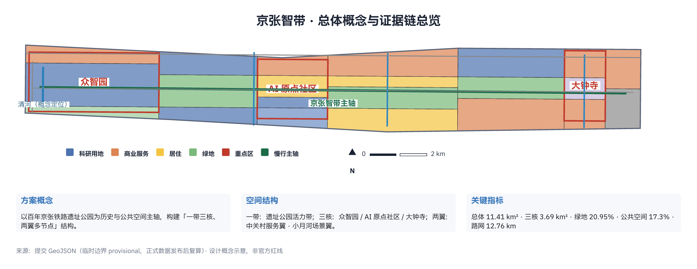
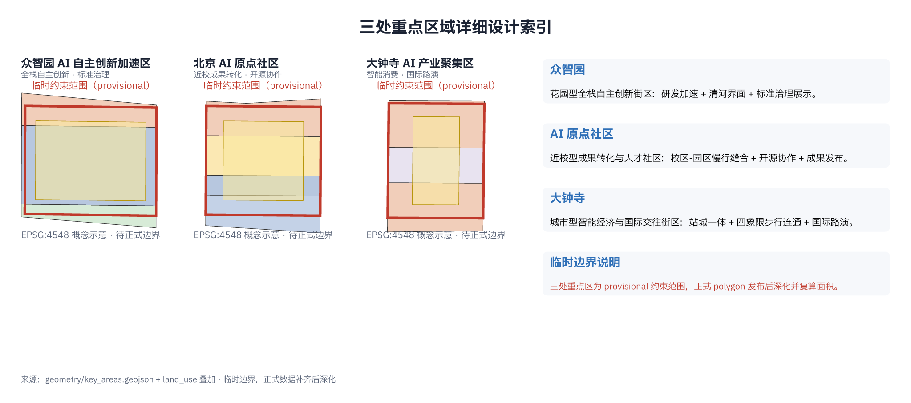
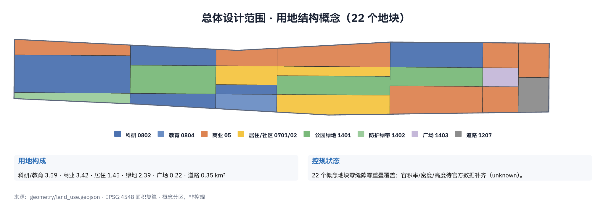
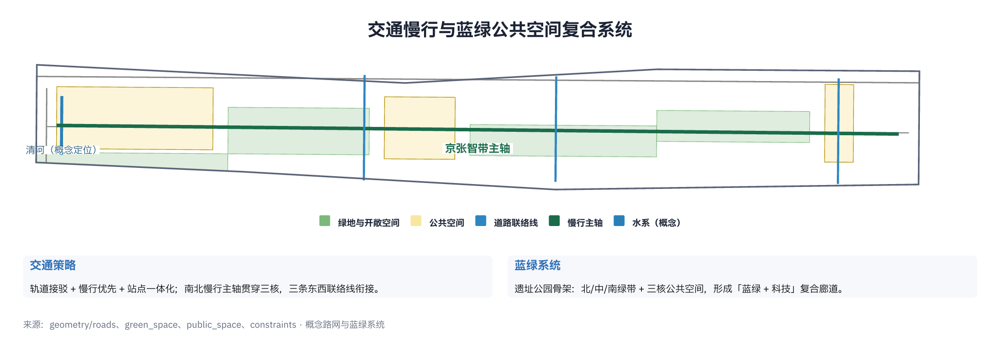
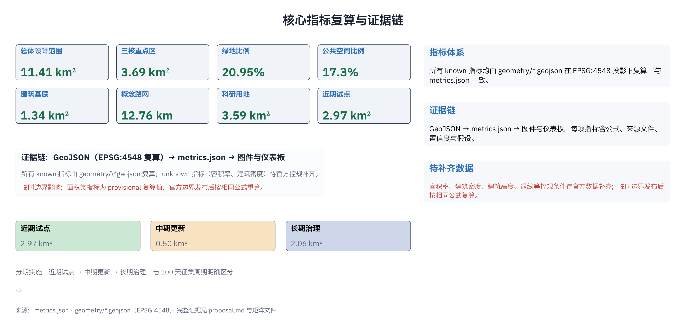

| 层级 | 面积 | 边界状态 |
|---|---|---|
| 统筹研究范围 | 约 43.6 km² | provisional |
| 总体设计范围 | 约 11.41 km² | provisional |
| 重点区域范围 | 约 3.69 km² | provisional |
| 重点区 | 定位 | 面积(约) |
|---|---|---|
| 众智园AI自主创新加速区 | 花园型全栈自主创新街区 | 1.93 km² |
| 北京AI原点社区 | 近校型成果转化与人才社区 | 1.04 km² |
| 大钟寺AI产业聚集区 | 城市型智能经济与国际交往街区 | 0.72 km² |



| 编号 | 项目 | 分期 |
|---|---|---|
| JZ-01 | 遗址公园慢行断点缝合 | 近期 |
| JZ-02 | 众智园清河创新界面 | 近期 |
| JZ-03 | 原点社区近校成果转化街 | 中期 |
| JZ-04 | 大钟寺站四象限步行连通 | 中期 |
| JZ-05 | AI 公共服务与端侧算力节点 | 中期 |
| JZ-06 | 全球AI活动周公共路线 | 长期 |
